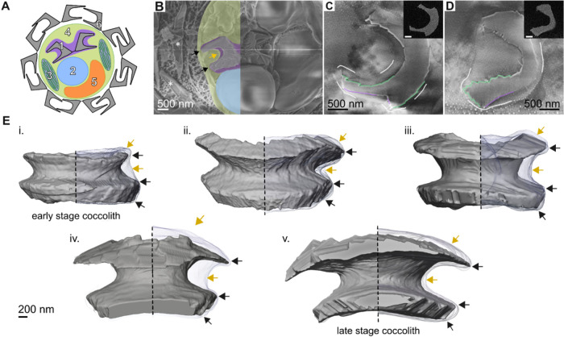

coccolith vesicle
A membrane-bounded intracellular compartment of coccolithophores that encloses a developing calcite coccolith. Its bounding membrane surrounds the site of coccolith mineralization and can change shape as the crystals grow. [DOI:10.1021/jacs.6c02151]

NCBITaxon:127549) · Emanuel M. Avrahami, Dmitry Karpov, Lior Aram, Nadav Elad, Razi Safadi, Irit Rosenhek-Goldian, Xiao-Meng Sui, Diede de Haan, Neta Varsano, Sidney R. Cohen, et al.; CC BY 4.0, via PubMed Central · CC_BY_4_0 · source: PMC PMC13067266.1 fig2 · DOI:10.1021/jacs.6c02151Components
| Component | Type | Part of / acts on | Grounding | Genes | Stoichiometry | Essential | Role |
|---|---|---|---|---|---|---|---|
| membrane | Other | part of | GO:0016020 | UNKNOWN | Bounds the vesicle lumen around the developing coccolith.
|
Canonical examples
NCBITaxon:127549Calcidiscus leptoporus — Strain RCC1130. Supplementary Methods identify the culture; cryo-SEM, cryo-FIB-SEM and cryo-electron tomography show the vesicle and its relationship to developing coccolith crystals. External coccoliths were removed before plunge freezing for FIB imaging; Figure 2B instead uses high-pressure freezing and freeze fracture. [DOI:10.1021/jacs.6c02151]NCBITaxon:2903Emiliania huxleyi — Strain AWI1516. Cryo-FIB-SEM resolves intracellular coccoliths in the coccolith-vesicle/reticular-body system separately from a calcium-rich storage compartment. The label follows the verified NCBI taxon, which retains Gephyrocapsa huxleyi as a synonym. [DOI:10.1038/ncomms11228]
Functions
- intracellular coccolith formation — Provides the membrane-bounded environment in which coccolith calcite crystals develop. This site-of-formation claim does not specify the molecular mechanism that sets crystal shape.
DOI:10.1021/jacs.6c02151Results and Figures 2-3 image membrane-enclosed coccoliths at different developmental stages in Calcidiscus leptoporus.DOI:10.1038/ncomms11228Figures 3-4 distinguish the calcite-forming compartment from the separate calcium-rich storage compartment in Emiliania huxleyi.
Discussions
- CURATION_TODO (RESOLVED): Keep the coccolith-forming vesicle distinct from its mineral product and neighboring calcium store. Similarity in calcium content or close membrane apposition does not make these entities equivalent.
- CURATION_TODO (RESOLVED): Do not assign unidentified luminal particles to a full ATPase complex or import cargo scaffolds as vesicle-building proteins. Ultrastructural resemblance is insufficient to choose a protein family or infer transport activity.
- CURATION_TODO (OPEN): Resolve molecular transport, membrane shaping, developmental dynamics and occurrence across additional species and life-cycle phases. Near-native snapshots and elemental maps establish morphology but do not independently prove a general causal mechanism.
Evidence
DOI:10.1021/jacs.6c02151Avrahami et al. (2026), Journal of the American Chemical Society. Primary Results, Discussion, Conclusions, figure captions and supplementary culture/imaging Methods read. Membrane-crystal proximity varies with position and stage; mechanistic compartmentalization remains an interpretation of structural and elemental observations.DOI:10.1038/ncomms11228Sviben et al. (2016), Nature Communications. Primary microscopy Results, Discussion and culture Methods read. The calcium/phosphorus-rich storage compartment is distinct from the coccolith-vesicle/reticular-body system; apposition does not establish continuity or an identified transfer mechanism.GO:0043231Verified broad intracellular membrane-bounded organelle parent, not an exact coccolith-vesicle identity.
Curation history
2026-10-03T17:53:43Zcodex · CREATED_RECORD — Scaffolded by scripts/new_record.py2026-10-03T17:54:47Zcodex · EXPANDED_RECORD — Added evidence-backed morphology, two verified species examples, membrane constituent and calcification-site function; documented compartment, protein and causal boundaries; added inspected CC BY 4.0 Figure 2 with verified ALI licence and checksums.
Source: data/structures/membrane_organelle/coccolith_vesicle.yaml